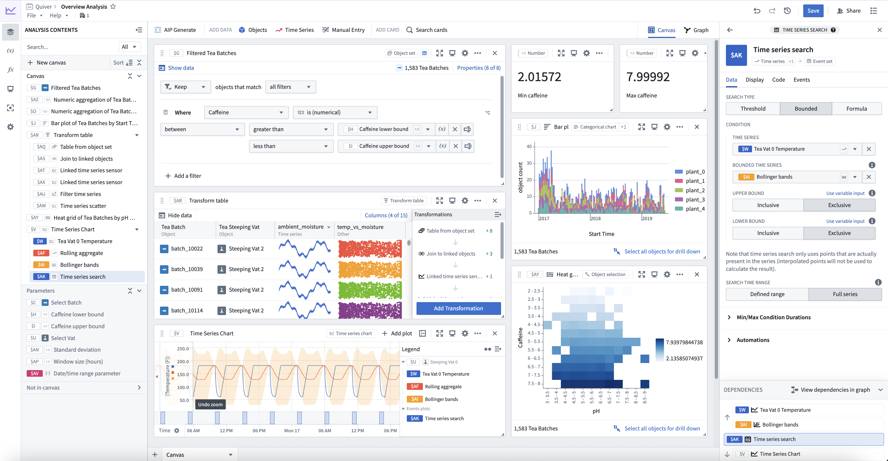

Quiver provides a point-and-click interface to perform data analysis on object and time series data from the Ontology. You can use these analyses to create interactive dashboards that allow others to explore and investigate the data in operational workflows. For simpler use cases, Foundry offers streamlined interfaces for time series analysis and object set analysis. Review our documentation on analysis types for a comparison.

Quiver enables you to:
Visualize, filter, and transform object and time series data without code.
Build analyses using canvas mode for organizing and presenting cards, or graph mode for inspecting card dependencies and data flow.
Quickly navigate the relationships between linked object types.
Parameterize analyses to easily switch between different views of the data and results.
Create interactive dashboards that you can embed in operational applications such as Workshop.
Create charts that you can embed in reporting applications such as Notepad.
Save and share analyses directly with colleagues.
Leverage Quiver's formula language for more advanced calculations.
Use transform tables and datasets for more advanced transformations and aggregations.
Quiver is a good fit for analytical use cases where:
You can learn more about when to use Quiver and when to use other Foundry applications in:
:::callout{theme="success" title="Palantir Learning portal"} For a deep dive into data analysis in Quiver, visit learn.palantir.com â. :::